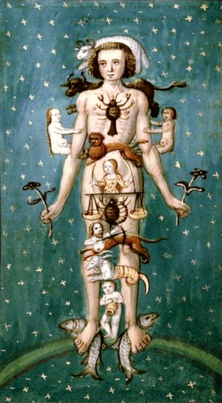
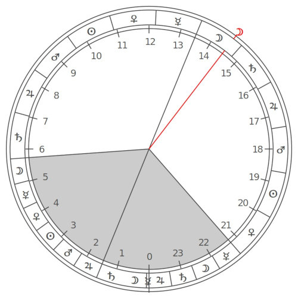

Hermetic Astrology and Medicine
Ever since the ancient world, astrology has been applied to many fields of human endeavour. In modern times these have been reduced (rationalised) to scientific disciplines, such that magic turned into physics, alchemy into chemistry and the ancient medicine into diagnostics, medical theory, surgery and applied pharmacy. Here we shall investigate what these originally really were to their fullest and most elaborate extent. To make things clear, the term Magic here means the intentional manipulation of substances in the physical world by the employment of supernatural agencies.What is Astrological Medicine ?
Astrological Medicine within the framework of Hermetism, encompasses a number of fields of human endeavour. These include iatromathematika, melonesia, spagyric, rhizomatoi and botany especially in the recent form of herbalism.Andre-Jean Festugiere (15.03.1898-13.08.1982), the historian, philologist and priest, who also translated the Corpus Hermeticum, said about Logos and Nous:
For even in man (the highest of the animals), the rational soul is still bound up with the body and dependent on matter. All the processes of the reason (logos) help one not one whit to make the ascent toward God. "Those who failed to hear the Divine Proclamation," says one of the Hermetic writers, "are those who possess the logos only, but have not received also the nous" that is, the faculty of mystical intuition; " . . . these men know not for what purpose they have been made, and by whom they have been made." The entire spiritual quest therefore will consist in gathering together one's faculties within oneself, in ridding oneself of all images and all thoughts, in living in a state of pure passivity in
which one hopes, in the end, to find God. ("Personal Religion Among The Greeks", p132)
Some Fields of Hermetic Medicine Involving Astrology
 Root Gatherer
(Rhizomatoi)
Root Gatherer
(Rhizomatoi)
 Taberna herbaria (Herb Tavern)
Taberna herbaria (Herb Tavern)
Rhizomatoi, Herbaria, Taberna and Unguentaria
The medicinal nature of plants has been known since ancient times. The addition of astrological observations and symbolism into the timing of collection, preparation and administration of herbs and herbal medicines is part of the technical Hermetica, namely Hermetical Astrological Medicine.The Rhizomatoi were specialist "root-gatherers" who were the fore-runners to today's herbalists but with a magical twist. They collected all sorts of plant parts which were regarded as healing substances, and had the ultimate aim of supplying apothecaries who prepared them as drugs and dispensed them for later administration. There was a huge resurgence of this art in Italy in the middle ages.
In ancient times, all medical practitioners, no matter how illustrious, went out into the fields and woods to collect their own medicinal plants. As demand grew and complexities in medications followed, specialists set themselves up in business. There was the Herbarium for herbs and herbal preparations, the Rhizomatoi dedicated to the sale of medicinal plant roots, and Tabernae as laboratories to prepare any sort of drug with their necessary equipment.
Since the majority of raw materials for the making of medicines came from plants, the term Plantae Officinalis was employed to state which particular plants were for medicinal use. The term Officinalis in this sense originally referred to the medical plant store of a monastery and was later used as an adjunct to the name of a plant to denote that it was a medicine.
Further along the line, such was the spread of medications in the ancient Roman world, Unguentaria Tabernae (Unguent Taverns) were set up to specialise in the preparation of ointments. The preparatory pharmacists were called Unguentarii. As well as that were Taberna herbaria for the sale of medicines, compresses, poultices, decoctions and herbal teas. These all served as part of the folk medicine, which set itself apart from the doctors.
Eventually, these places were all controlled by laws in order to protect the new scientific approach to medicines. The Taberna changed into an apothecary (modern "Apotheke" in German). The herbalist turned into a pharmacist. The root-gatherer became the druggist (the word drug coming from the Middle Low German word droge "trocken", referring to dried roots).
Melothesia

Zodiacal Melothesia
 Dr. Howard Leslie Cornell
Dr. Howard Leslie Cornell
| Zodiac Sign | Body Region | Body Parts / Organs |
| Aries | head | eyes, nose, ears, mouth, etc. |
| Taurus | neck | throat |
| Gemini | shoulder, armpits, arms | hands, fingers |
| Cancer | chest area | spleen, lungs, ribs |
| Leo | abdominal area | heart, back, sides |
| Virgo | stomach | intestines |
| Libra | navel, loins, buttocks | kidneys |
| Scorpio | pubic region | uterus, penis |
| Sagittarius | hips, thighs | |
| Capricorn | knees | kneecaps |
| Aquarius | calves, shins | |
| Pisces | feet | toes, soles, heels |
| Planet | Corresponding Body-Parts |
| Moon | sense of taste, stomach, abdomen, uterus, left side of the body |
| Mercury | speech and thought, tongue, gall, buttocks |
| Venus | sense of smell, liver, fleshy parts |
| Sun | sight, brain, heart, tendons, right side of the body |
| Mars | left ear, kidneys, veins, genitals |
| Jupiter | sense of touch, lungs, arteries, semen |
| Saturn | right ear, spleen, bladder, mucus, bones |
In 1933, Dr. Howard Leslie Cornell, vastly expanded on the astrological medical correspondences in his large volume entitled Encyclopedia Of Medical Astrology. Dr. Cornell has provided for the reader the benefits of his years long research and application of medical astrology in his own medical practice. Not only are further anatomical references made but also those of ailments and diseases plus much more.
Iatromathematika, Medical Astrologers
(from Greek ἰατρική "medicine" and μαθηματικά "mathematics") were medical astrologers who applied astrological correspondences to the parts of the human body to investigate disease and discover remedies. Paracelsus and his Spagyric (Alchemic)
Paracelsus and his Spagyric (Alchemic)
Spagyric
The term Spagyric is taken to be from the Late Latin word, spagyricus from the Ancient Greek verbs, spán (σπᾶν, "to draw" or " to pull") and ageírein (ἀγείρειν, "to assemble"). In our case this means to draw together essential quintessences in a manner that enables the assembly of a medicine. It is often synonymous with alchemic or iatrochemical. Spagyric is in essence the Hermetically alchemical preparation of medicines. It was Paracelsus (c.1493–24.09.1541), who coined the term spagyric and also applied this healing method in practice. Spagyric is firmly entrenched in Hermetism, especially in the way that Paracelsus understood the Hermetic philosophical principles and how he applied them to his technical application.The way that Spagyric works is to reproduce the mechanisms of Universal Generation through the first and second causes. Everything is comprised of matter and spirit and it is the spirit part that is locked up in the matter. Important for Spagyric to work, the spirit part needs to be extracted in such a manner as to ensure that it reaches its maximum virtue. Freeing the spirit from matter requires that it first be exalted, whereby it is matured and ripened, allowing it to evolve through an alchemical process called putrefaction. This acts in a similar manner to a seed breaking down in the ground providing nutrient necessary for germination and new growth.
In Hermetic herbalism or in the mineral kingdom, for this to be successful, it is essential for a practitioner to know the nature of both elemental and astral influences. It is also necessary to know what these influences produce and equally understand what causes could modify those influences. All of this happens within the framework of interaction between macrocosm and microcosm, so that also plays a large part in the overall process. Out of the process of the putrefaction of matter, the spirit is allowed to be purified by freeing it from its earthly prison.
The entire physical side of spagyric is concerned with this separation, or extraction, of the spirit, in order to produce intended quintessences. Since spagyric preparations are in accordance with the mechanisms of Universal Generation, the quintessences produced are readily assimilable by the human organism, thereby being more effective than allopathic medicines. The process is altogether simple, grand and subtle. It is simple in that it follows natural processes, grand as it represents the process of creation and subtle because it defies human comprehension.
Some Prominent Practioners
 Hermes Trismegistus as depicted on the Siena Cathedral's marble floor.
Hermes Trismegistus as depicted on the Siena Cathedral's marble floor.
Hermes Trismegistus
The most important for our story is undoubtedly Hermes Trismegistus, an amalgam of the Egyptian God Thoth, and the Greek God Hermes known in Ancient Greek as "Hermē̂s ho Trismégistos" (Ἑρμῆς ὁ Τρισμέγιστος), Hermes, the Thrice Greatest. According to legend, he was the inventor of Astrology, Alchemy and Magic and authored many books on those subjects.The oldest recorded mention of Hermes Trismegistus was by the Egyptian Priest, Manetho (lived between c.285 and c.222 BCE) when he wrote to King Ptolomaios II:
- Inscriptions from the land of Seir, originating from Thoth, the first Hermes, with hieroglyphs in the sacred language, translated into the Greek language after the flood and recorded in books by the son of Agathodaemon, the second Hermes, the father of Tat, in the shrines of the temple of Egypt.
 Paracelsus
Paracelsus
Paracelsus's book about Astronomy and Astrology
Paracelsus
Born in Switzerland as Philippus Aureolus Theophrastus Bombastus von Hohenheim (c.1493–24.09.1541), but better known as Paracelsus, was a physician, alchemist, lay theologian, and philosopher of the German Renaissance.
Medical Astrologer
Richard Napier
Richard Napier
 Richard Napier's
Richard Napier'sCase Book
Richard Napier
The prominent English astrologer and medical practitioner, Richard Napier (04.05.1559–01.04.1634) had studied under Simon Forman, therewith inheriting his manuscripts. He was a lifelong devout Anglican, claiming to have conversed regularly with the archangel Raphael, and is reputed to have prayed so much that he even died in prayer. His sister was married to Sir Thomas Myddelton of Chirk Castle, the son of Sir Thomas Myddelton, Lord Mayor of London (who was also one of his patients). Napier's many papers were in turn inherited by Elias Ashmole and are now in the Bodleian Library, Oxford. Nicholas Culpeper
Nicholas Culpeper
Nicholas Culpeper's
Book
Book
Nicholas Culpeper
The English botanist, herbalist, physician and astrologer, Nicholas Culpeper (18.10.1616–10.01.1654) authored the books The English Physitian (1652, later called Complete Herbal, 1653) and Astrological Judgement of Diseases from the Decumbiture of the Sick (1655).Planetary Rulers of the Signs
Each of the twelve signs is associated with a ruling planet, known appropriately as its ruler. Once again this is not arbitrary and the ancients thought out a scheme of allocation. Since the Sun and Moon, known together as the luminaries or the lights, are extremely important in any chart the rulerships start with them. The sign with most affinity to the Sun is Leo and that for the Moon is Cancer. This effectively divides the signs into two groups sometimes referred to as the solar and lunar sections. Around the circle the polarities change from positive (outgoing, expressive) to negative (receptive, creative).
Chaldean Planetary Order
Counting around the circle in the natural order of the signs and in Chaldean planetary order we get

Zodiacal Signs with Ruling Planets
Polarity: pink = +ve, green = -ve
E Leo ruled by d Sun (+ve),
F Virgo ruled by b Mercury (-ve),
G Libra ruled by c Venus (+ve),
H Scorpio ruled by e Mars (-ve)
I Sagittarius ruled by f Jupiter (+ve),
J Capricorn ruled by g Saturn (-ve).
and in the other direction
D Cancer ruled by a Moon (-ve),
C Gemini ruled by b Mercury (+ve)
B Taurus ruled by c Venus (-ve),
A Aries ruled by e Mars (+ve),
L Pisces ruled by f Jupiter (-ve),
K Aquarius ruled by g Saturn (+ve).
F Virgo ruled by b Mercury (-ve),
G Libra ruled by c Venus (+ve),
H Scorpio ruled by e Mars (-ve)
I Sagittarius ruled by f Jupiter (+ve),
J Capricorn ruled by g Saturn (-ve).
and in the other direction
D Cancer ruled by a Moon (-ve),
C Gemini ruled by b Mercury (+ve)
B Taurus ruled by c Venus (-ve),
A Aries ruled by e Mars (+ve),
L Pisces ruled by f Jupiter (-ve),
K Aquarius ruled by g Saturn (+ve).
Planetary Rulers of the Weekdays

The Days of the Week
and Their Rulers
Whether or not it was the earliest, a seven day week was decreed by King Sargon I of Akkad, sometime around 2300 BCE. Sargon managed to form the very first known empire in Mesopotamia, known as the Akkadian Empire, uniting Sumerian and Akkadian speaking peoples.
The ancient mathematicians who observed the celestial objects for their timekeeping were also aware of the fact that a lunation takes 28 days and that four weeks of seven days each fit neatly into the scheme of things. Those four weeks align nicely with the four well known phases of the Moon, namly new, first quarter, full and last quarter.
Planetary Hours
When the rulers of the weekdays were allocated, something else was noticed by the ancients. When considering planetary hours, the daytime from sunrise to sunset is divided into twelve equal segments. The night time from sunset to the next sunrise. is also divided by twelve. When the daylight is longer than the darkness, the day hours will be longer than regular clock hours, the night hours being shorter,The day begins at sunrise, as was the case in ancient times and still is for some modern time keeping, a day's ruling planet is also allocated to the first hour of the new day. The subsequent 24 hours are then ruled by the planets in a reversed Chaldean Order, from Saturn to Moon. The 25th hour just happens to be the same planet as the ruler of the next day.

As an example, take any Saturday, with its ruler as Saturn. Starting at sunrise, the first hour is also ruled by Saturn. The next by Jupiter, then by Mars and so forth. The 25th hour, which is the first hour of the next day, Sunday, will happen to be ruled by the Sun, automatically.
An Example of a Clock
Showing Planetary Hours.
from Sunrise to Sunset, Saturday, 12 day-hours
01 02 03 04 05 06 07 08 09 10 11 12
g f e d c b a g f e d c
from Sunset to Sunrise, Saturday, 12 night-hours, then the next day
13 14 15 16 17 18 19 20 21 22 23 24 ...01
b a g f e d c b a g f e ...d
01 02 03 04 05 06 07 08 09 10 11 12
g f e d c b a g f e d c
from Sunset to Sunrise, Saturday, 12 night-hours, then the next day
13 14 15 16 17 18 19 20 21 22 23 24 ...01
b a g f e d c b a g f e ...d
In the example of a planetary hour clock shown on the left, the grey area represents night time, the white part day time. The black line running through the middle of day and night runs from the Nadir, lowest point of the sun, at mid-night, to the Zenith, the highest point of the Sun, at mid-day. The red line is like a clock hand which says that the current hour is ruled by the M00n.
This particular clock starts at the lowest point marked as 0 for midnight. The upper left edge of the grey area shows the end of the previous night and therefore the sunrise of the current day, just before 6 o'clock, with Saturn ruling the first hour, so it is a Saturday. The day continues until the last planetary hour, ruled by Venus, up to just past 9 o'oclock in the evening. The clock display ends at the 0, for midnight of this particular day.

Prenatal Epoch in Hermetical Astrology
The prenatal epoch is purportedly a means by which to gain a more accurate birth time, called rectification, of the chart. It was first mentioned in a text from about the tenth century called the Centiloquium, the most influential book ever on astrology. Originally attributed to Claudius Ptolemy (Greek: Πτολεμαῖος, Ptolemaios; Latin: Claudius Ptolemaeus; c. 100 – c. 170 AD) and known as the Centiloquium of Ptolemy for many centuries, it has more likely been written in the Arab world some nine centuries after Ptolomy. The particular aphorism which is of interest is number fifty-one and generally referred to as the Trutine of Hermes Trismegistus.
Plato, the Daimon and Birth
In the “Myth of Er,” which concludes the Republic, Plato outlines the process by which the discarnate soul is paired with its Daimon who guides its descent through the planetary spheres, as it takes on the planetary qualities corresponding to each sphere (such as the vices and virtues) and, finally, is coupled with a body at the pre-natal syzygy (the new or full moon immediately preceding birth) and is, finally, incarnated in the elemental/terrestrial sphere of Earth.This descending sequence alludes to an inverse operation – one in which the soul of the initiate ascends, with the help of its Daimon (Guardian Angel, Oikodespotes, Higher Genius, Tutelary Spirit, etc.) and aided by theurgical rites, through the cosmic spheres and re-integrates with the One, attaining the state of henosis/gnosis/theosis, depending on the tradition in question.
- Written By Jaime Paul Lamb
Calculation of the Prenatal Epoch
The 51st Centiloquium of Ptolemy describes it thus: “In what sign the Moon is at the time of birth, make that sign the ascendant in conception; and in what sign she is found at the conception, make that or its opposite the sign ascending at the birth.”Getting the estimated epoch
first get the longitude (lon) of estimated epoch's ascendant (asc) and moon
waxing birth moon: birth moon lon = epoch1 ASC lon ( so ASC = MOON)
birth ASC lon = epoch1 moon lon (and MOON = ASC)
waning birth moon: birth moon lon = epoch1 DESC lon ( so ASC = MOON + 180)
birth DESC lon = epoch1 moon lon (and MOON = ASC + 180)
data used
-----------------------------------------------------------------
tropical month: 27.321582241 days on 1.1.2000 incr. 0.013s per century
360°/27.321582241 = 13.176396477 degrees per day
but using 13.162 because:
over 268.1738147210756 days, too short by 6h 58m (418m)
over 273.85434728529464 days, too short by 9h 3m (543m)
div = 13.162; // 13.176396477
days = (360 * 9 + atm + 180*(more+below))/div;
epoch1 = pc->tjd - days;
output from program astroboy:
-----------------------------------------------------------------
1 waxing 0 below 1 more 0 atm 125.73 days 269.39
root 15.02.1957 00:01:58.0 ut
root asc 24°44'53.2"Ar moon 00°28'55.1"Vi
epoch asc 00°28'55.1"Pi moon 24°44'53.2"Li
1 estimated epoch
aim 21.05.1956 14:37:53.2 ut
aim asc 13°33'19.7"Pi moon 25°16'50.7"Li
1 match epoch moon to aim
adj 21.05.1956 13:38:25.7 ut
adj asc 00°28'41.9"Pi moon 24°44'52.5"Li
1 match epoch asc to aim
epoch 21.05.1956 13:38:26.8 ut
epoch asc 00°28'55.1"Pi moon 24°44'53.0"Li
1 match root to epoch
root2 15.02.1957 00:01:58.0 ut
root2 asc 24°44'53.0"Ar moon 00°28'55.1"Vi
-----------------------------------------------------------------
root2 15.02.1957 00:01:58.0 ut
epoch 21.05.1956 13:38:26.8 ut
About
Hi, my name is Rod Schneider and I have created this website to illustrate how, with the help of astrology, that negativity can be converted into something more positive. The astrology being shown here is rooted in the most ancient inceptions derived from Hermetism. It is technical but in the hands of a practitioner already familiar with astrology has great potential to be helpful. There is also much help for non-astrologers to use astrology in a different manner, namely with cycles and phases.Comments and contributions are always welcome.
Contact: rodschneider35@gmail.com